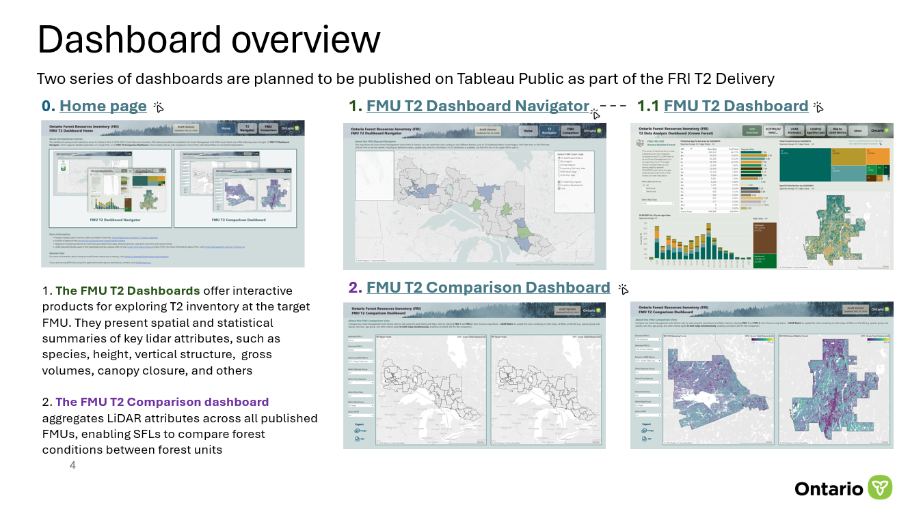
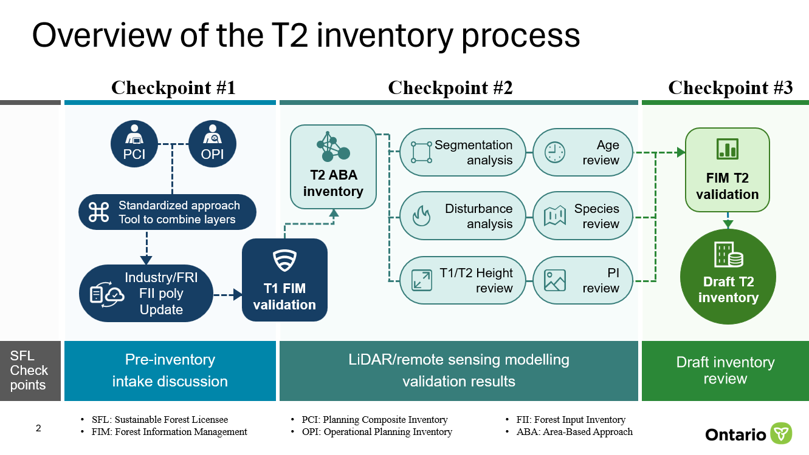
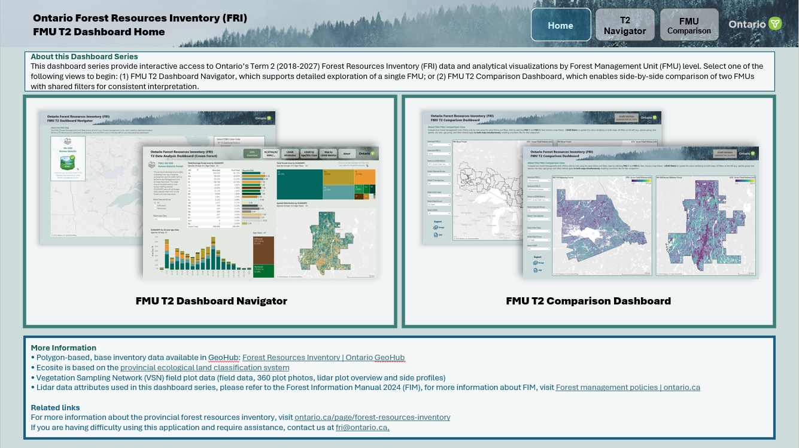
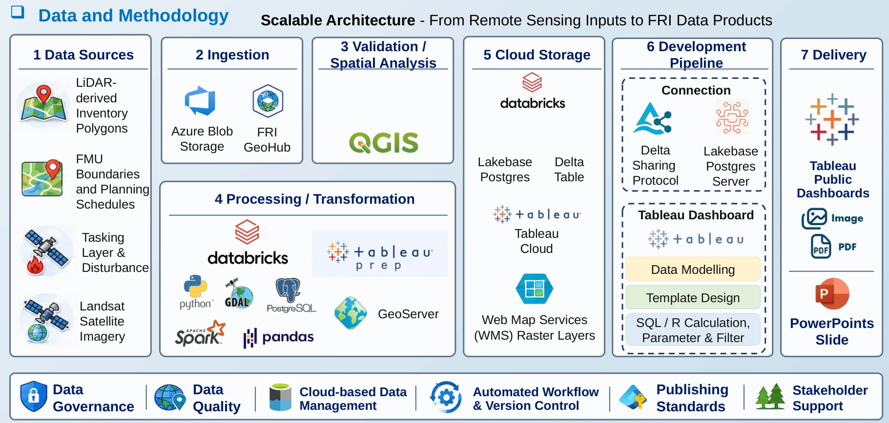
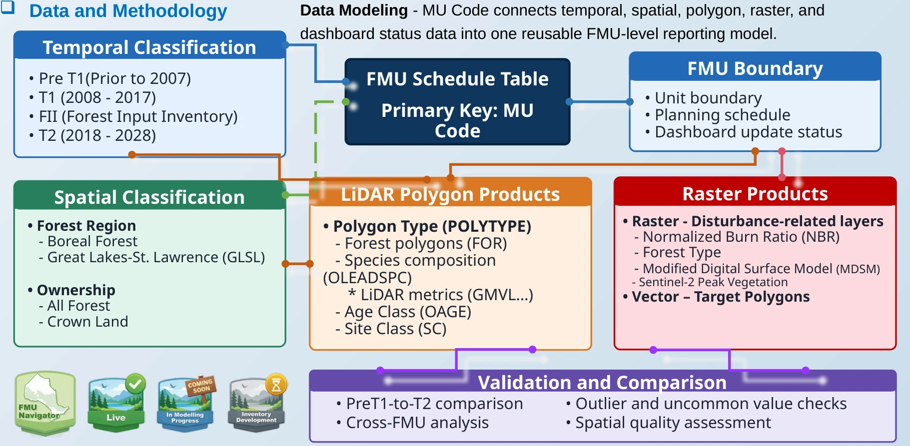
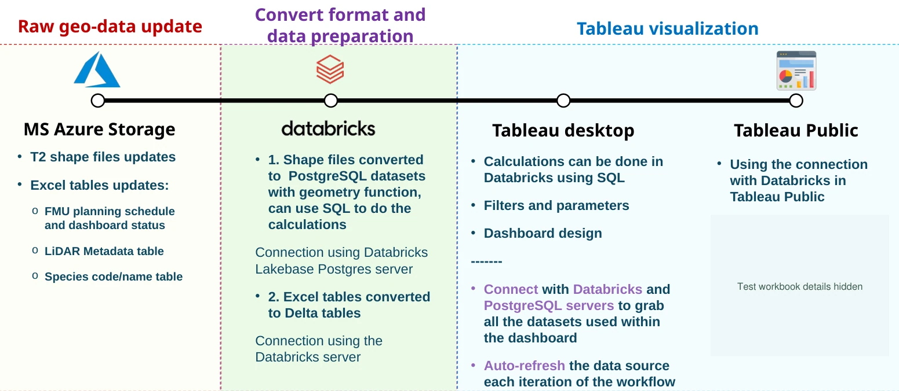
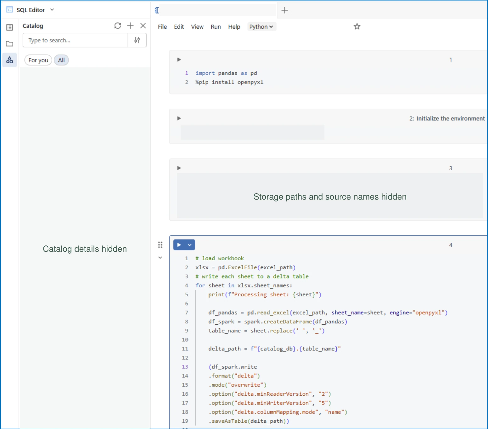
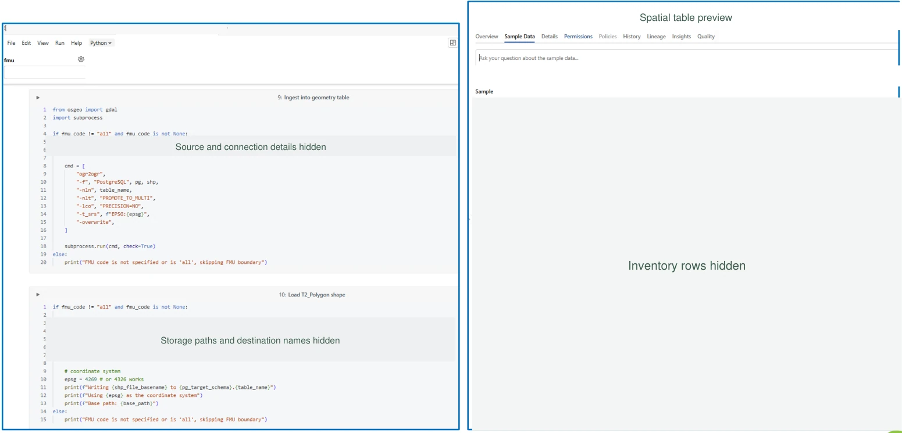
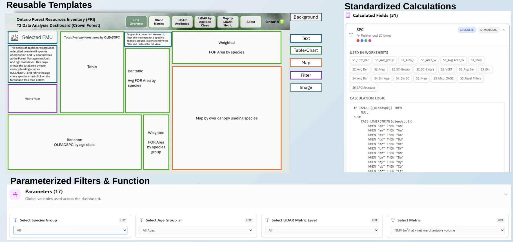

FOREST RESOURCES INVENTORY / TERM 2
FRI Term 2
Forest Inventory Dashboards
A Tableau dashboard series for exploring LiDAR-derived forest inventory and comparing results across forest management units.
- My role
- Primary dashboard developer
- Tools
- Tableau · Databricks · GIS

CONTEXT & CONTRIBUTION
Overview & My Role
Ontario’s Forest Resources Inventory (FRI) program uses a collaborative review process to prepare and deliver forest inventories. The Term 2 dashboard series brought the maps, LiDAR-derived stand measures, and review information together at the Forest Management Unit (FMU) level.
What I built
As the primary dashboard developer, I built the Navigator, unit-level Tableau views, and comparison layouts. I designed reusable templates, calculated fields, and parameters so analysts could prepare new FMU views using the same structure.
Who it supported
I worked with FRI scientists to review spatial patterns and unusual values. I also worked with platform colleagues on data preparation and used forestry partner feedback to refine the views for inventory review and delivery.

TABLEAU PRODUCT DESIGN
Dashboard Walkthrough
The Navigator helps users locate a unit. The unit dashboard brings together species composition, stand metrics, and LiDAR maps. The comparison view lets reviewers apply the same controls to two units.
Original design gallery
9 views

Home Page
The home page introduces the dashboard series and guides reviewers to the FMU Navigator or the side-by-side FMU Comparison view.
These are original design boards and screenshots. Unit identifiers, live map layers, and example values are masked where they appear.
DATA MODEL & DELIVERY
System Architecture
The original architecture follows the work from inventory inputs and spatial validation through transformation, storage, Tableau development, and delivery. It also shows where QA, version control, and publishing standards apply.

RELATING THE SOURCES
MU Code as the unit identifier
The FMU schedule supplies unit-level context. MU Code relates it to boundaries, reporting status, and stand and raster products. A single FMU can contain many stand records, so unit-level and stand-level measures are handled at their respective levels of detail.
The reporting model also distinguishes inventory periods, forest regions, and ownership classes so filters can narrow the scope of a review.

DATABRICKS TO TABLEAU
Databricks Workflow
The workflow prepares tabular and spatial sources separately. Tableau uses the prepared tables for status and lookups and uses geometry layers for the inventory maps.

TABULAR PATH
Excel to Delta
The notebook reads workbook sheets, normalizes fields, and writes Delta tables for metadata and lookups. The Navigator reads the prepared status record for each FMU.

SPATIAL PATH
Shapefiles to Lakebase
Geometry preparation includes checking the spatial reference system and loading stand and unit layers into Lakebase PostgreSQL. Tableau uses the prepared geometry in unit maps.

REUSABILITY & REVIEW
Results & Collaboration
The reusable Tableau template gave analysts a consistent set of calculations, filters, and layouts for new units. It also gave reviewers familiar views when moving between units.

Review unusual values
I used summaries and maps together to compare inventory periods and locate stands for follow-up with FRI scientists.
Refine the views
Feedback from forestry partners informed the placement of filters, comparison views, and reference material.
Prepare the next unit
The template pairs common calculation logic with unit-specific inputs so the workflow can be repeated across FMUs.